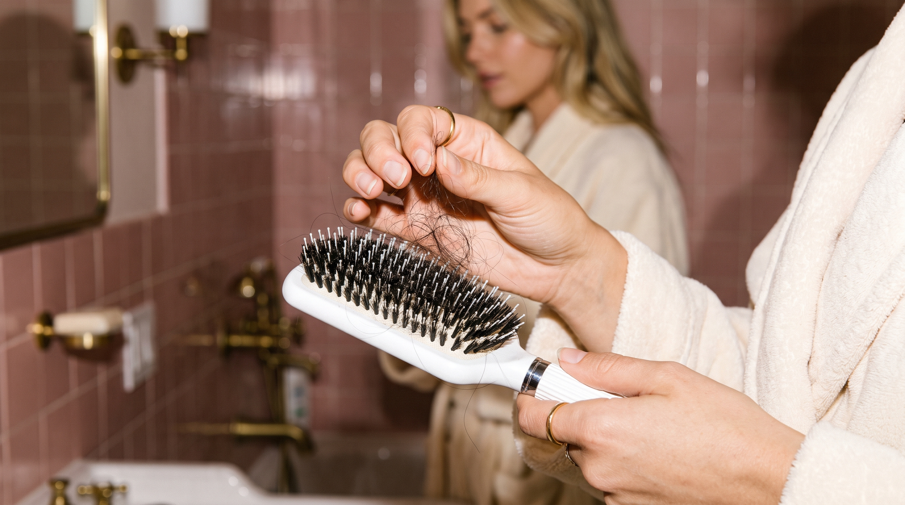

Comment enlever les cheveux coincés dans une brosse
C'est le geste qu'on repousse toujours à plus tard, et qui devient de plus en plus pénible à mesure qu'on l'évite. Voici la méthode la plus rapide pour libérer votre brosse des cheveux accumulés, sans l'abîmer.

Pourquoi les cheveux s'accumulent dans les picots
À chaque brossage, quelques cheveux tombés naturellement du cuir chevelu restent enroulés à la base des picots. Un par un, ce n'est rien. Mais sans retrait régulier, ils s'entassent, se mélangent au sébum et aux résidus de produits coiffants, et finissent par former un vrai nid difficile à démêler.
Résultat : la brosse perd en efficacité, glisse moins bien dans les longueurs, et le geste de nettoyage devient de plus en plus long à mesure qu'on le repousse.
La méthode la plus rapide, étape par étape
1. Commencez par le haut des picots
Avec les doigts, saisissez la mèche visible au sommet des picots et tirez délicatement vers le haut. La majorité des cheveux se détachent à cette étape.
2. Utilisez un peigne fin pour la base
Pour les cheveux tassés à la racine des picots, glissez un peigne à dents fines sous la mèche et remontez. Ça soulève les cheveux sans forcer sur les picots.
3. La pince à épiler pour les cas récalcitrants
Sur une brosse classique, certaines mèches très enroulées résistent au peigne. Une pince à épiler permet de les saisir précisément sans abîmer le coussin.
Ce qu'il ne faut pas faire
Éviter de tirer sèchement sur les mèches tassées : ça peut plier ou casser les picots, surtout sur les brosses en plastique souple. Évitez aussi les ciseaux pour couper les cheveux emmêlés — le risque de couper les picots eux-mêmes est réel.
Et si le retrait prenait 3 secondes ?
C'est exactement le problème que Birushi résout : une pression sur le bouton soulève la plaque de picots, et tous les cheveux accumulés se détachent d'un coup. Plus de peigne, plus de pince, plus de corvée.
Découvrir Birushi — 69€En résumé
Retirer les cheveux coincés dans une brosse n'a rien de compliqué avec la bonne méthode : peigne fin, pince pour les cas difficiles, et surtout un geste régulier plutôt qu'un grand nettoyage occasionnel. Votre brosse en ressort plus efficace, et votre routine plus rapide.